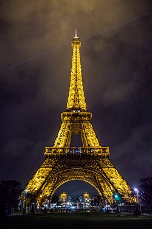
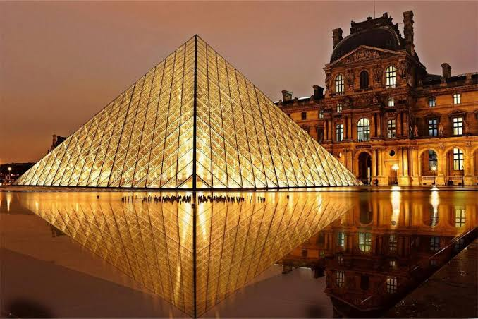
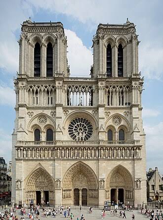

La Torre Eiffel, ubicada en el Campo de Marte a orillas del río Sena, es el emblema indiscutible de París y el monumento de pago más visitado del mundo.
Esta imponente "Dama de Hierro" ofrece vistas panorámicas inigualables, experiencias gastronómicas de lujo y un legado histórico único que atrae a millones de viajeros

El Museo del Louvre, ubicado en el antiguo Palacio Real de París, es el museo de arte más visitado del mundo. Alberga más de 35.000 obras expuestas,
incluyendo la Gioconda de Leonardo da Vinci, la Venus de Milo y La Libertad guiando al pueblo. Su icónica pirámide de cristal sirve como entrada principal

La Catedral de Notre Dame es una joya del arte gótico ubicada en la Île de la Cité de París, Francia . Destaca por sus imponentes torres de 69 metros,
sus emblemáticas gárgolas, sus inmensos rosetones y coloridas vidrieras. Dedicada a la Virgen María, resurgió de un devastador incendio y recibe a millones de visitantes.